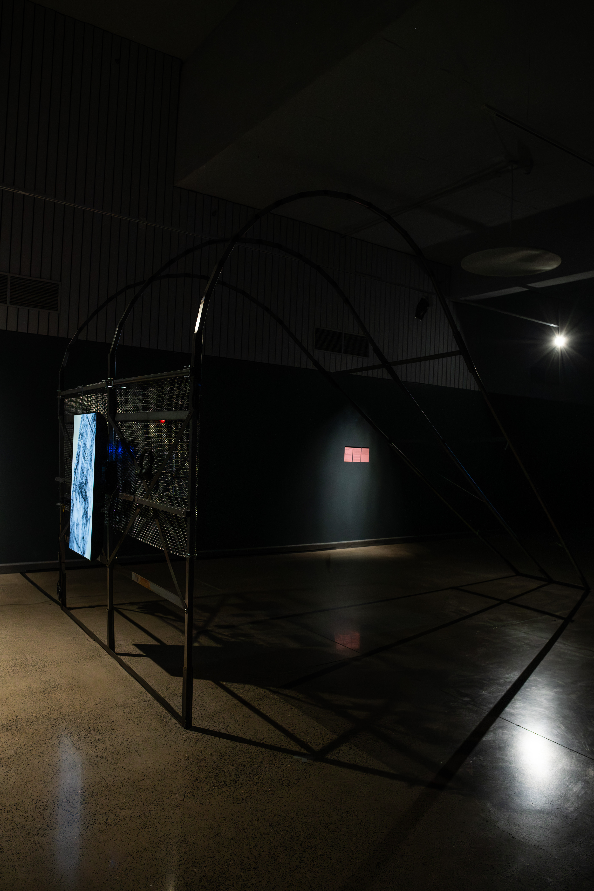
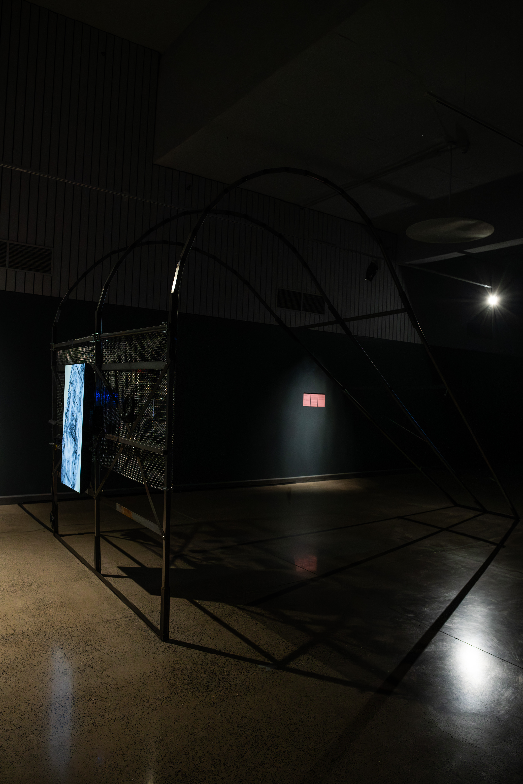
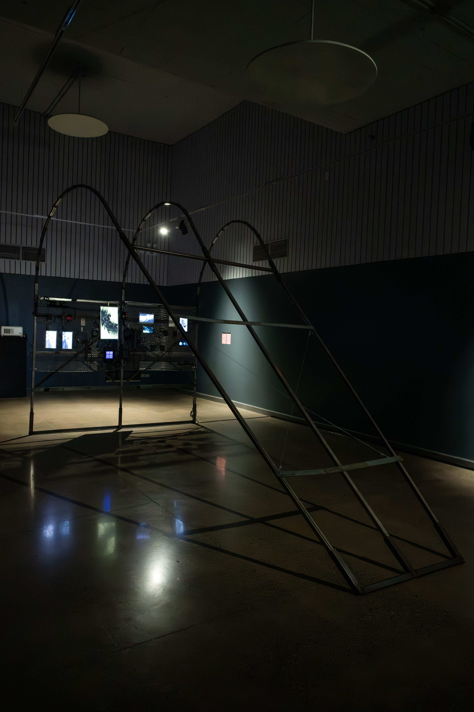
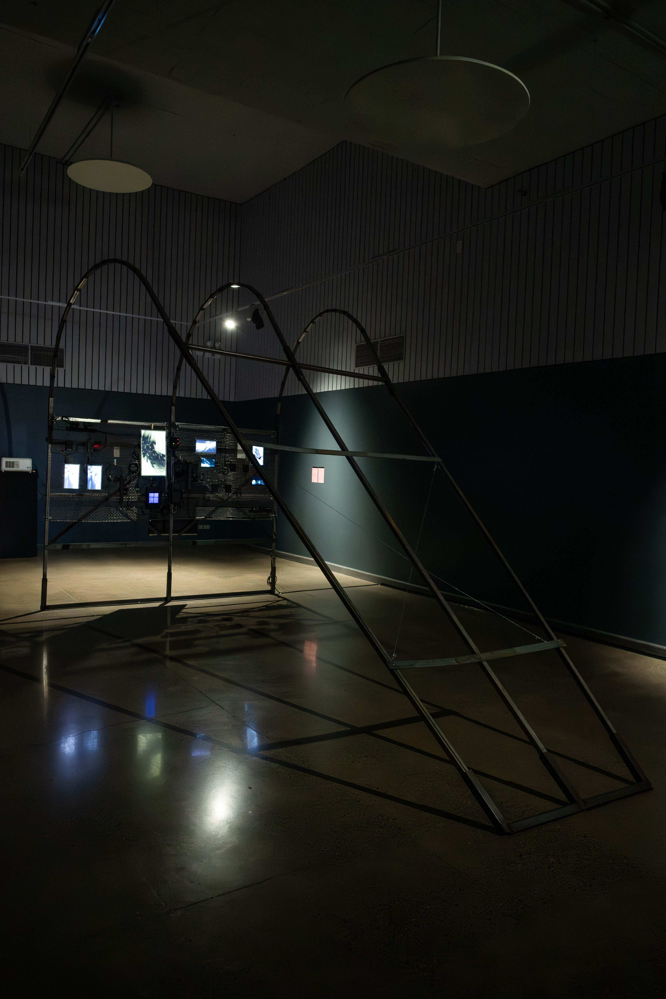

ARCO PARLANTE
2024


 

 


Es un proyecto instalativo que explora la intersección entre infraestructuras ferroviarias y narrativas locales en Quinta Normal a través de arte y tecnología. La obra busca recopilar mitos urbanos sobre túneles, trenes fantasmas, estaciones perdidas y misterios de la zona, reinterpretando creativamente estos elementos en una obra instalativa que cruce medios y oratorias en torno a los territorios de Quinta Normal.
El proyecto ha sido seleccionado para el proyecto Punta Medial en colaboración con el Foro de las Artes, el Museo de Arte Contemporáneo de Quinta Normal y la Bienal de Artes Mediales, para ser desarrollado entre 2024 y 2025.
La obra utiliza fotogrametría para generar modelos 3D que muestran secciones y extractos urbanos del barrio, que son modificados en tiempo real por relatos orales y testimonios de vecinos que habitan los sectores que conviven con el complejo ferroviario. La obra también cuenta con un sistema de recopilación para registros de voz in situ, grabando testimonios de personas que visiten la obra, a fin de generar un repositorio de relatos orales en torno a vida alrededor de la infraestructura ferroviaria.
DETALLES
| Año | 2024/2025 |
| Materiales | Estructura metálica, pantalla, audífonos con relatos, audífonos con micrófono para dejar relatos, interfaz de sonido |
| Formato | Instalación medial | Web | https://17.bienaldeartesmediales.cl/obra/arcoparlante/ | Fotografía | Coorporación Chilena del Video & Daniela Canales |
GALERÍA